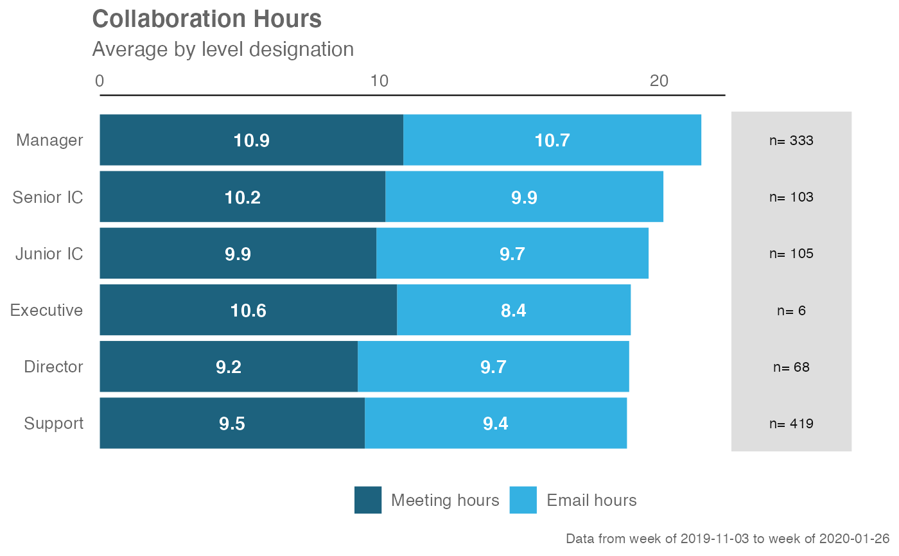
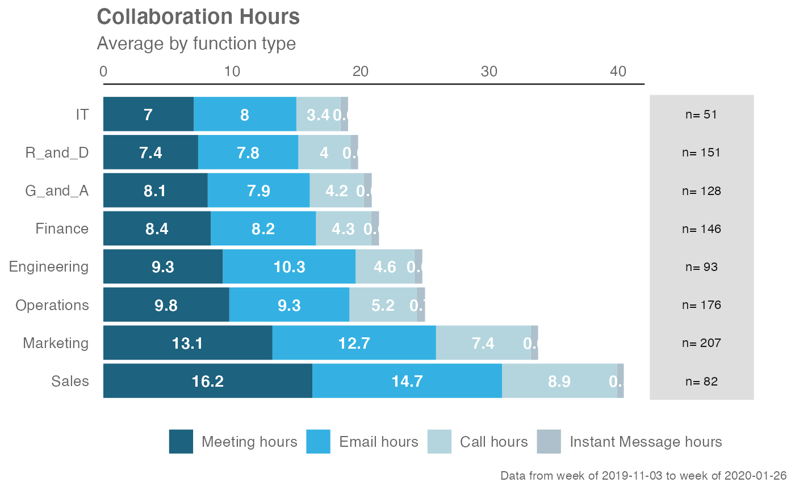

Creates a sum total calculation using selected metrics, where the typical use case is to create different definitions of collaboration hours. Returns a stacked bar plot by default. Additional options available to return a summary table.
create_stacked( data, hrvar = "Organization", metrics = c("Meeting_hours", "Email_hours"), mingroup = 5, return = "plot", stack_colours = c("#1d627e", "#34b1e2", "#b4d5dd", "#adc0cb"), plot_title = "Collaboration Hours", plot_subtitle = "Weekly collaboration hours" )
| data | A Standard Person Query dataset in the form of a data frame. |
|---|---|
| hrvar | HR Variable by which to split metrics, defaults to "Organization" but accepts any character vector, e.g. "LevelDesignation" |
| metrics | A character vector to specify variables to be used in calculating the "Total" value, e.g. c("Meeting_hours", "Email_hours"). The order of the variable names supplied determine the order in which they appear on the stacked plot. |
| mingroup | Numeric value setting the privacy threshold / minimum group size. Defaults to 5. |
| return | Character vector specifying what to return, defaults to "plot". Valid inputs are "plot" and "table". |
| stack_colours | A character vector to specify the colour codes for the stacked bar charts. |
| plot_title | An option to override plot title. |
| plot_subtitle | An option to override plot subtitle. |
Returns a ggplot object by default, where 'plot' is passed in return.
When 'table' is passed, a summary table is returned as a data frame.
Other Flexible:
create_dist(),
create_fizz(),
create_line_asis(),
create_line(),
create_period_scatter(),
create_rank(),
create_trend()
sq_data %>% create_stacked(hrvar = "LevelDesignation", metrics = c("Meeting_hours", "Email_hours"), return = "plot")sq_data %>% create_stacked(hrvar = "FunctionType", metrics = c("Meeting_hours", "Email_hours", "Call_hours", "Instant_Message_hours"), return = "plot")sq_data %>% create_stacked(hrvar = "FunctionType", metrics = c("Meeting_hours", "Email_hours", "Call_hours", "Instant_Message_hours"), return = "table")#> # A tibble: 8 x 7 #> group Meeting_hours Email_hours Call_hours Instant_Message… Total #> <chr> <dbl> <dbl> <dbl> <dbl> <dbl> #> 1 Engi… 9.28 10.3 4.56 0.621 24.8 #> 2 Fina… 8.35 8.17 4.28 0.620 21.4 #> 3 G_an… 8.11 7.93 4.20 0.610 20.9 #> 4 IT 7.02 7.97 3.42 0.597 19.0 #> 5 Mark… 13.1 12.7 7.36 0.576 33.8 #> 6 Oper… 9.79 9.33 5.22 0.655 25.0 #> 7 R_an… 7.37 7.79 4.05 0.593 19.8 #> 8 Sales 16.2 14.7 8.92 0.538 40.4 #> # … with 1 more variable: Employee_Count <int>